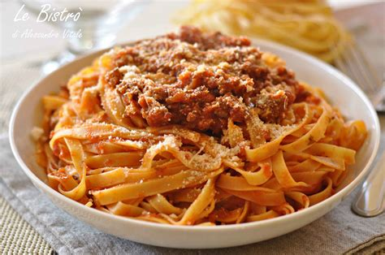
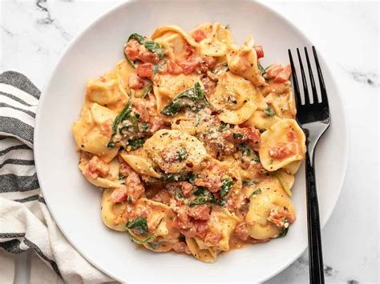
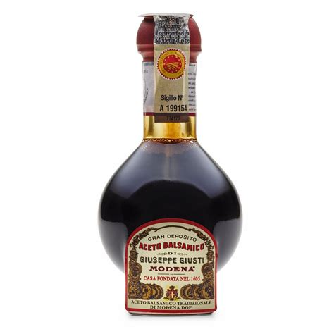
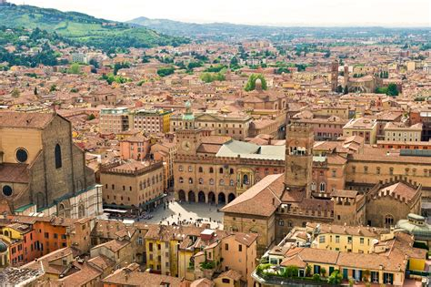
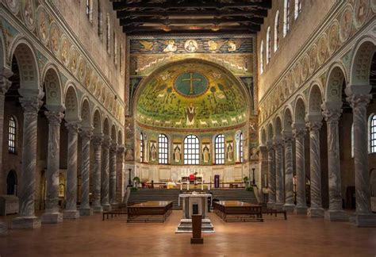
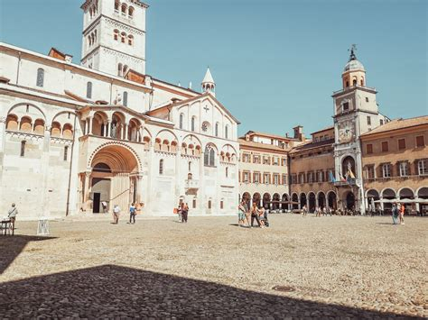
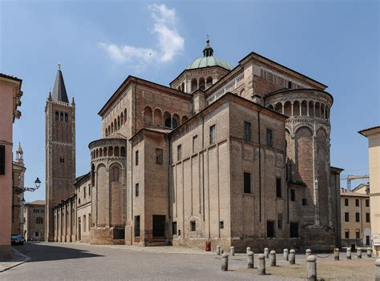
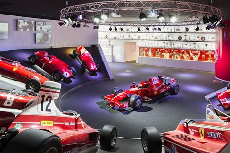
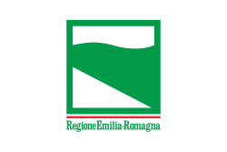

Emilia-Romagna
Overview
Emilia-Romagna is a region in northern Italy famous for its rich culinary tradition, historic cities, and varied landscapes ranging from the Apennine Mountains to the Adriatic Riviera. Bologna, the capital, is known for its ancient university and its porticoes. The region is also the heart of the Italian automotive industry, home to legendary brands like Ferrari, Lamborghini, and Ducati.
Quick Facts
- Capital: Bologna
- Regional Language: Italian, Emilian and Romagnol dialects
- Population: ~4.5 million
- Famous for: motors, Renaissance art
- Fun Fact: The University of Bologna, founded in 1088, is the oldest in the Western world!
Famous Dishes
Tagliatelle al Ragù

Tortellini

Prosciutto di Parma

Balsamic Vinegar

Famous Landmarks
Bologna

Ravenna

Modena

Parma

Ferrari Museum

When to Visit
The best time to visit Emilia-Romagna is during the spring (April–June) and autumn (September–October), although summer is also popular.
Regional Symbols
- Flag: 
- Coat of arms: